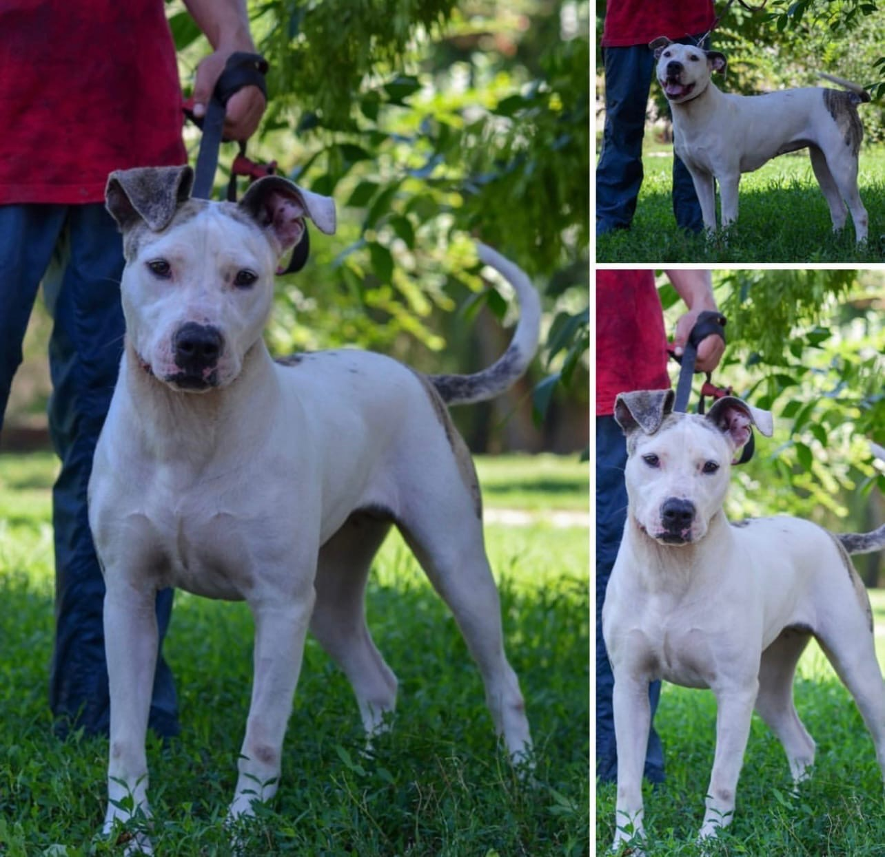
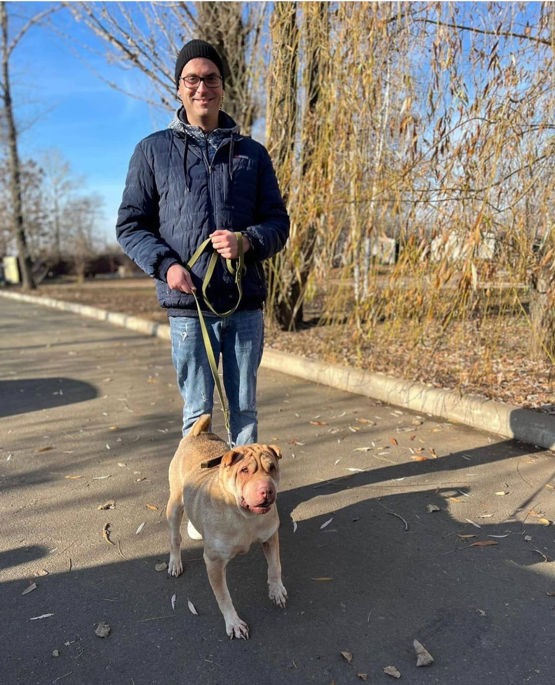
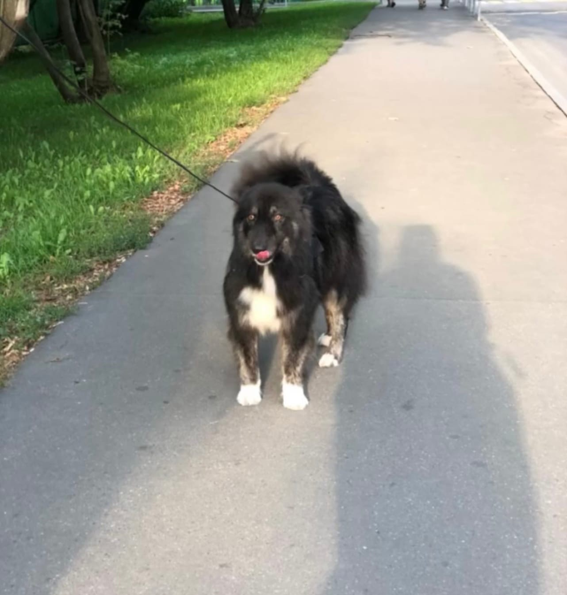

Pumba
Congratulations to Pumba on a new page in life!It would be difficult to find a home for such a special baby, but fate has done its job üò¢Fate has done its job!
In a good way, our sweety!

Jessica
Jessica is looking for a responsible family!üê∂
Jessica is 1 year old. Sterilized, vaccinated.
By nature, there are moments that need to be solved (hyperactive, does not know commands, aggresses on other animals).üëπüëºüèª
It is given according to the contract, after acquaintance, with the condition of tracking the fate of the dog.

Shura
Since 2018, Shura has been waiting. No one wanted dogs with pronounced aggression, everyone was afraid of her character and no one understood how cool she was! For the shelter, Shura became a personal disaster, she reacted very aggressively to dogs.ü§º‚Äç‚ôÄüê∂
Finally, our girl has found her family!
HAVE A GOOD TRIP, BABY! Behave yourself there, your parents are wonderful! Everything will work out!üòÅüíó

Sultan
Sultan, who came to the shelter in August last year, found a family üêæ Now our boy will run and jump as much as he needs, and not huddle in an aviary ❤
He ended up in a shelter with a fractured paw and spine. And so, after a year and a half, we see him off on a good journey üò¢ ✨
Good luck to you, our baby. Don't be sad in your new home, you'll get used to it quickly.☺

Rango
Rango is a tireless wanderer who, found himself in a shelter. He appeared out of nowhere in one of the courtyards of Moscow, all in scars, thin, sometimes bald and without front teeth. Thanks to the attention of caring people, the guy nevertheless came in a shelter, where he started eat and covered himself with shiny new hair. üò¢Amazingly, despite a difficult past, Rango has not lost trust in humans. He, like a huge kitten, snuggles up to the feet of a person and waits, strokes and caresses Rango by an incredibly kind and outgoing boy. He happily greets all the guests in the aviary with his welcoming dance and wags his tail so that it seems about to take off. Outwardly, he looks older than his years, but in fact he is quite a young 4-year-old dog. He still has a whole life ahead, which would be so great to spend at home in warmth and love.ü•∞

Leia
Leia could have lived a very interesting life full of adventure! She could be a faithful companion on walks, on trips, or just a warm fluffy lump in whose arms you can hide in moments of sadness Leia could, but she lives so short that you don't have time to look back, as they put you behind bars again. üò•üò•üò•
She could lie back and refused to part with the person, and now, it seems, she has almost resigned herself to her fate! shelter. At the shelter for a walk But we still believe that such a wonderful girl must find her home! Leia is not against the company of other dogs, but she is one of those who really need a person. Her heart belongs to a man Please look into these eyes. ü§óü§óü§óü§óü§ó‚ù§‚ù§‚ù§
Vika
Three weeks have passed since Stout became home. Stout came to the orphanage relatively recently and not so long there and lived there, probably he was lucky or maybe fate ... But probably this story is for greetings from home, someday he will be obligatory) ü•≤
Stout's owner came to the orphanage, it seems a little more than a month. They learned to interact, communicate, walk and not only Vika got used to the fact that they would soon be sent to a new life, Stout was getting used to it too, in the end it seems to me that he understood. ü•∞ü•∞ü•∞

Upon arriving home, the stout was taken to a groomer, where he was tidied up, cut off all the old mats, washed off all the memories of the shelter and sent him to a new happy life. Not everything is super smooth, since Stout did not want to immediately perceive that besides him, a cat still lives in the house), but a little patience (Vika will probably say that there is a lot of patience), time and the guys will definitely get it right. Let's wish Vick and Stout, and now his name is Sherri, happy long years, and of course, that everyone gets used to a new life and live a close-knit family.üòÅ
Reyna
Imagine, our gentle, affectionate girl, a red bun, which we all remember well, has been home-made and truly happy for a year now!
How does a dog change when it finds a home! It's incredible In the photo, you can see that Reyna has lost those extra pounds and is gradually gaining athletic form together with her owner.üòçüòçüòç
Thin
Thin, neat and very gentle Marlena came to the shelter as a puppy, she has not yet had time to understand all the rules of life and is completely unaware of where she is, what needs to be done. Now she is the personification of childish fragility, naivety and gullibility, because there was no cruelty in her life, and we believe that there never will be.üôè
This baby loves the attention of people, the company of other dogs, and with pleasure invites everyone to play or lie in the grass. You will never be bored with this cute girl.üòçüòçüòç